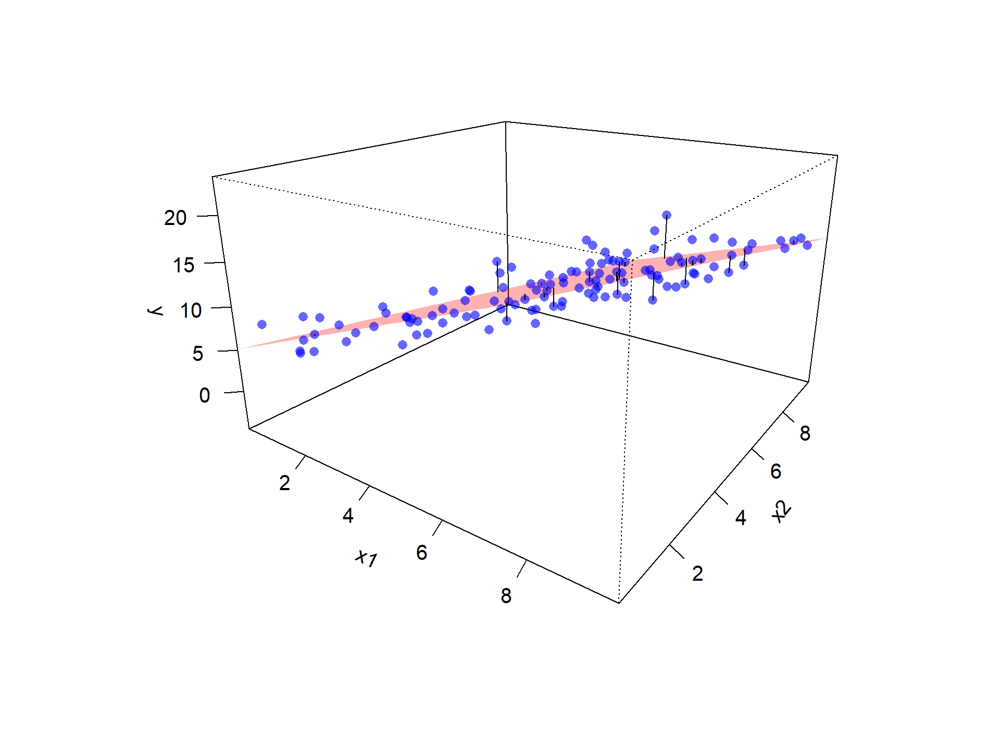
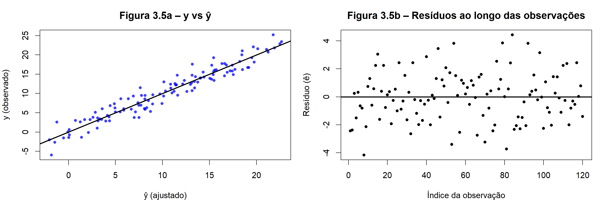

14 Mínimos Quadrados Ordinários no MRLM
O objetivo da estimação em regressão é obter valores para os parâmetros desconhecidos \(\beta_0,\beta_1,\dots,\beta_{p}\) de modo que o modelo represente, da forma mais adequada possível, a relação entre a resposta \(Y\) e as variáveis explicativas \(X_1,\dots,X_{p}\).
Assim como no MRLS, a estratégia no MRLM é minimizar a soma dos quadrados dos resíduos. Em outras palavras, buscamos os coeficientes que tornam pequena, no conjunto dos dados observados, a diferença entre os valores observados e os valores ajustados pelo modelo.
Do ponto de vista algébrico, os resíduos são definidos por
\[ \hat{\varepsilon}_i = y_i - \hat{y}_i = y_i - \big(\hat{\beta}_0 + \hat{\beta}_1 x_{i1} + \cdots + \hat{\beta}_{p} x_{ip}\big). \]
14.1 Critério de Mínimos Quadrados
O critério de mínimos quadrados escolhe os valores \(\hat\beta_0,\hat\beta_1,\dots,\hat\beta_{p}\) que minimizam a soma dos quadrados dos resíduos:
\[ S(\boldsymbol{\beta}) = \sum_{i=1}^n \hat\varepsilon_i^{\,2} = \sum_{i=1}^n \bigl(y_i-\hat y_i\bigr)^2 = \sum_{i=1}^n \bigl[y_i - (\hat{\beta}_0 + \hat{\beta}_1 x_{i1} + \cdots + \hat{\beta}_{p} x_{ip})\bigr]^2. \]
Em notação matricial, o vetor de resíduos ajustados é dado por
\[ \hat{\boldsymbol{\varepsilon}} = \mathbf{Y} - \mathbf{X}\hat{\boldsymbol{\beta}}. \]
Assim, a soma de quadrados dos resíduos pode ser escrita como
\[ S(\boldsymbol{\beta}) = \hat{\boldsymbol{\varepsilon}}^\top \hat{\boldsymbol{\varepsilon}} = (\mathbf{Y}-\mathbf{X}\boldsymbol{\beta})^\top(\mathbf{Y}-\mathbf{X}\boldsymbol{\beta}). \] ## Interpretação Geométrica do MQO
A minimização da soma de quadrados também pode ser interpretada geometricamente: ao escolher \(\hat{\boldsymbol{\beta}}\) que torna \(S(\boldsymbol{\beta})\) mínimo, estamos selecionando, entre todos os vetores do espaço coluna de \(\mathbf{X}\), aquele que fica mais próximo de \(\mathbf{Y}\) em norma euclidiana. Em outras palavras, o problema de MQO equivale a projetar \(\mathbf{Y}\) ortogonalmente sobre \(\operatorname{col}(\mathbf{X})\), produzindo o vetor ajustado
\[ \hat{\mathbf{Y}}=\mathbf{X}\hat{\boldsymbol{\beta}}, \]
enquanto o resíduo
\[ \hat{\boldsymbol{\varepsilon}}=\mathbf{Y}-\hat{\mathbf{Y}} \]
é exatamente a componente perpendicular a esse subespaço. Assim, obtemos a decomposição
\[ \mathbf{Y} \;=\; \underbrace{\hat{\mathbf{Y}}}_{\text{projeção em }\operatorname{col}(\mathbf{X})} \;+\; \underbrace{\hat{\boldsymbol{\varepsilon}}}_{\text{complemento ortogonal}}, \] que resume a essência geométrica do MQO.
A Figura 3.4 apresenta um caso com duas variáveis explicativas (\(x_1\) e \(x_2\)), de modo que possamos visualizar tudo em três dimensões.
- Os pontos azuis são as observações \((x_{i1},x_{i2},y_i)\).
- O plano vermelho representa o plano ajustado pelo modelo, \(\hat{y}_i=\hat{\beta}_0+\hat{\beta}_1 x_{i1}+\hat{\beta}_2 x_{i2}\).
- As linhas pretas verticais ligam cada ponto observado ao plano e correspondem aos resíduos \(\hat{\varepsilon}_i = y_i-\hat{y}_i\).
Essa figura ajuda a entender a ideia do MQO: minimizar a soma dos quadrados das distâncias verticais entre os pontos observados e o plano ajustado. Observe que, nessa representação, não minimizamos a distância perpendicular ao plano, mas sim a distância na direção da variável resposta \(y\), coerente com o fato de que modelamos a esperança condicional \(E(Y \mid \mathbf{X})\)
Em linguagem de espaços vetoriais, a figura ilustra que a parte “explicada” (\(\hat{\mathbf{Y}}\)) pertence a \(\operatorname{col}(\mathbf{X})\), e a parte “não explicada” (\(\hat{\boldsymbol{\varepsilon}}\)) é ortogonal a esse espaço, reforçando a interpretação do MQO como uma operação de projeção.
14.2 Equações Normais e Estimação dos Parâmetros
A minimização da função
\[ S(\boldsymbol{\beta}) = (\mathbf{Y}-\mathbf{X}\boldsymbol{\beta})^\top(\mathbf{Y}-\mathbf{X}\boldsymbol{\beta}) \]
leva ao sistema de equações normais:
\[ \mathbf{X}^\top\mathbf{X}\,\hat{\boldsymbol{\beta}}=\mathbf{X}^\top\mathbf{Y}, \]
as quais são equivalentes à condição de ortogonalidade dos resíduos.
Essa condição significa que os resíduos são ortogonais a todas as colunas de \(\mathbf{X}\), isto é, não apresentam associação linear com nenhuma das variáveis explicativas. Em outras palavras, não há mais informação linear disponível nas variáveis que possa ser usada para reduzir os erros do modelo.
\[ \mathbf{X}^\top\hat{\boldsymbol{\varepsilon}}=\mathbf{0}. \]
Quando \(\operatorname{rank}(\mathbf{X})=p+1\), a matriz \(\mathbf{X}^\top\mathbf{X}\) é inversível e obtemos a solução única dada por
\[ \hat{\boldsymbol{\beta}}=(\mathbf{X}^\top\mathbf{X})^{-1}\mathbf{X}^\top\mathbf{Y}. \]
Essa expressão mostra que os coeficientes estimados são obtidos a partir de combinações lineares das observações da variável resposta, ponderadas pela estrutura das variáveis explicativas. Embora a fórmula envolva operações matriciais, sua interpretação permanece a mesma: encontrar os coeficientes que melhor ajustam o modelo aos dados observados.
Assim, o problema de estimação no MRLM se resume a resolver um sistema linear bem definido, cuja solução fornece diretamente os coeficientes do modelo ajustado.
14.3 Matrizes de Projeção
Os valores ajustados e os resíduos podem ser escritos de forma natural usando projeções:
\[ \hat{\mathbf{Y}} = \mathbf{X}\hat{\boldsymbol{\beta}} = H\,\mathbf{Y},\qquad \hat{\boldsymbol{\varepsilon}} = \mathbf{Y} - \hat{\mathbf{Y}}= (I_n-H)\,\mathbf{Y}, \]
em que
\[ H = \mathbf{X}(\mathbf{X}^\top \mathbf{X})^{-1}\mathbf{X}^\top \quad\text{e}\quad M = I_n-H \]
são, respectivamente, a matriz chapéu e a matriz dos resíduos. A matriz \(H\) projeta o vetor \(\mathbf{Y}\) sobre o espaço gerado pelas variáveis explicativas, enquanto \(M\) projeta sobre a parte que não é explicada pelo modelo.
Ambas as matrizes são simétricas e idempotentes, e satisfazem \(HM=\mathbf{0}\) e \(\operatorname{rank}(H)=p+1\), \(\operatorname{rank}(M)=n-p-1\).
Em termos geométricos,
\[ \mathbf{Y} = H\mathbf{Y} + M\mathbf{Y} = \hat{\mathbf{Y}} + \hat{\boldsymbol{\varepsilon}}, \]
isto é, a resposta observada pode ser decomposta em duas partes: uma parte explicada pelo modelo, que está no espaço gerado pelas variáveis explicativas, e uma parte não explicada, que é ortogonal a esse espaço.
Essa decomposição ajuda a entender o papel dos valores ajustados e dos resíduos. Os valores ajustados representam aquilo que o modelo consegue reproduzir a partir das variáveis disponíveis, enquanto os resíduos correspondem ao que não foi capturado.
A Figura 3.5 reúne dois painéis complementares.
- Painel (a): gráfico de \(y\) em função de \(\hat{y}\), com a linha de \(45^\circ\). Pontos próximos da diagonal indicam bom ajuste local, enquanto maior dispersão em torno da linha sugere maior variabilidade residual.
- Painel (b): gráfico dos resíduos \(\hat{\varepsilon}_i\) ao longo do índice \(i\). A linha horizontal em zero ajuda a identificar assimetrias e possíveis padrões.
A ausência de estrutura sistemática nos resíduos, como tendências ou mudanças no nível de variabilidade, é compatível com as hipóteses de média zero e variância constante.
Em conjunto, os dois gráficos ajudam a visualizar a decomposição \(\mathbf{Y}=H\mathbf{Y}+M\mathbf{Y}\): o primeiro destaca o comportamento dos valores ajustados, enquanto o segundo evidencia a parte não explicada pelo modelo.

Observação (caso singular). Se \(\mathbf{X}^\top\mathbf{X}\) não for inversível, por exemplo na presença de multicolinearidade perfeita, as equações normais admitem infinitas soluções. Uma alternativa é adotar a solução de mínima norma por meio da inversa generalizada de Moore–Penrose, \(\hat{\boldsymbol{\beta}}=\mathbf{X}^+\mathbf{Y}\). Esse ponto será retomado ao discutir multicolinearidade e métodos de regularização.
ImportanteTeorema — Estimador de MQO no MRLM
No modelo de regressão linear múltipla
\[ \mathbf{Y} = \mathbf{X}\boldsymbol{\beta} + \boldsymbol{\varepsilon}, \qquad E(\boldsymbol{\varepsilon})=\mathbf{0}, \qquad \operatorname{Var}(\boldsymbol{\varepsilon})=\sigma^2 I_n, \]
o estimador de mínimos quadrados ordinários (MQO) de \(\boldsymbol{\beta}\) é dado por
\[ \hat{\boldsymbol{\beta}} = (\mathbf{X}^\top\mathbf{X})^{-1}\mathbf{X}^\top\mathbf{Y}. \]
Essa expressão fornece os coeficientes do modelo que minimizam a soma dos quadrados dos resíduos.
A expressão acima define o hiperplano de regressão no espaço gerado pelas variáveis explicativas. Esse hiperplano corresponde à melhor aproximação linear aos dados observados, no sentido de mínimos quadrados.
No caso de uma única variável explicativa, o modelo corresponde a uma reta no plano \((x_1,y)\). Com duas variáveis explicativas, obtemos um plano no espaço tridimensional \((x_1,x_2,y)\). Em dimensões mais altas, a construção resulta em um hiperplano, que segue a mesma lógica geométrica.
Em todos os casos, o ajuste é realizado minimizando as discrepâncias na direção da variável resposta, isto é, as diferenças verticais entre os valores observados e os valores ajustados.
A demonstração completa será apresentada no apêndice. De forma resumida, o resultado é obtido a partir dos seguintes passos:
- Define-se a função de mínimos quadrados
\[ S(\boldsymbol{\beta}) = (\mathbf{Y}-\mathbf{X}\boldsymbol{\beta})^\top(\mathbf{Y}-\mathbf{X}\boldsymbol{\beta}). \]
- Diferencia-se essa função em relação a \(\boldsymbol{\beta}\) e iguala-se a zero, obtendo-se as equações normais
\[ \mathbf{X}^\top\mathbf{X}\,\hat{\boldsymbol{\beta}}=\mathbf{X}^\top\mathbf{Y}. \]
- Sob a condição de posto completo da matriz \(\mathbf{X}\), a solução é única e corresponde a um mínimo global.
14.4 Propriedades dos Estimadores de MQO
Uma vez estabelecida a forma fechada do estimador, podemos investigar suas principais propriedades estatísticas. Essas propriedades formam a base da inferência em regressão, justificam o uso do método dos mínimos quadrados e ajudam a compreender suas limitações em situações práticas.
Considere o estimador de mínimos quadrados
\[ \hat{\boldsymbol{\beta}} = (\mathbf{X}^\top\mathbf{X})^{-1}\mathbf{X}^\top\mathbf{Y}. \]
Assumindo as hipóteses clássicas do modelo linear
\[ \mathbf{Y} = \mathbf{X}\boldsymbol{\beta} + \boldsymbol{\varepsilon}, \qquad E(\boldsymbol{\varepsilon})=\mathbf{0}, \qquad \operatorname{Var}(\boldsymbol{\varepsilon})=\sigma^2 I_n, \]
temos os seguintes resultados.
14.4.1 Não-viesamento
Proposição 1 (Não-viesamento).
\[ E(\hat{\boldsymbol{\beta}} \mid \mathbf{X}) = \boldsymbol{\beta}. \]
Esse resultado indica que, em média, o estimador de MQO recupera o verdadeiro valor dos parâmetros do modelo. Em termos práticos, se o processo de amostragem pudesse ser repetido muitas vezes sob as mesmas condições, a média das estimativas obtidas coincidiria com o vetor de parâmetros populacionais.
O não-viesamento garante que o método não introduz erro sistemático na estimação. Assim, eventuais diferenças entre estimativas e valores reais decorrem apenas da variabilidade amostral e não de algum viés estrutural do estimador.
Demonstração (esboço).
\[ E(\hat{\boldsymbol{\beta}}\mid \mathbf{X}) = (\mathbf{X}^\top\mathbf{X})^{-1}\mathbf{X}^\top E(\mathbf{Y}\mid \mathbf{X}) = (\mathbf{X}^\top\mathbf{X})^{-1}\mathbf{X}^\top \mathbf{X}\boldsymbol{\beta} = \boldsymbol{\beta}. \]
14.4.2 Matriz de variância-covariância
Proposição 2 (Matriz de variância-covariância).
\[ \operatorname{Var}(\hat{\boldsymbol{\beta}}\mid \mathbf{X}) = \sigma^2(\mathbf{X}^\top\mathbf{X})^{-1}. \]
Essa matriz descreve como as estimativas se dispersam em torno dos valores verdadeiros. Cada elemento da diagonal corresponde à variância de um coeficiente estimado, enquanto os elementos fora da diagonal representam a covariância entre diferentes estimadores.
Essa estrutura é importante porque mostra que a precisão das estimativas depende tanto da variabilidade dos erros quanto da forma como as variáveis explicativas estão organizadas na matriz \(\mathbf{X}\). Em particular, situações de forte dependência entre variáveis explicativas podem aumentar a variância dos estimadores.
Demonstração (esboço).
Seja \(A=(\mathbf{X}^\top\mathbf{X})^{-1}\mathbf{X}^\top\). Então
\[ \hat{\boldsymbol{\beta}} = A\mathbf{Y}, \qquad \operatorname{Var}(\hat{\boldsymbol{\beta}}\mid \mathbf{X}) = A\,\operatorname{Var}(\mathbf{Y}\mid \mathbf{X})\,A^\top = A (\sigma^2 I_n) A^\top = \sigma^2(\mathbf{X}^\top\mathbf{X})^{-1}. \]
14.4.3 Distribuição amostral (caso normal)
Proposição 3 (Distribuição amostral).
Se admitirmos normalidade para os erros, isto é, \(\boldsymbol{\varepsilon}\sim N_n(0,\sigma^2 I_n)\), então
\[ \hat{\boldsymbol{\beta}}\mid \mathbf{X} \sim N_{p+1}\!\left(\boldsymbol{\beta}, \;\sigma^2(\mathbf{X}^\top\mathbf{X})^{-1}\right). \]
Esse resultado decorre do fato de que \(\hat{\boldsymbol{\beta}}\) é uma combinação linear de \(\mathbf{Y}\). Como \(\mathbf{Y}\) possui distribuição normal multivariada, qualquer combinação linear de suas componentes também terá distribuição normal.
A normalidade dos estimadores permite a construção de testes estatísticos e intervalos de confiança exatos em amostras finitas. Sem essa hipótese, esses procedimentos continuam sendo utilizados, mas passam a ter validade aproximada, especialmente em amostras grandes.
Ideia da demonstração.
Como \(\hat{\boldsymbol{\beta}}=A\mathbf{Y}\) com \(A=(\mathbf{X}^\top\mathbf{X})^{-1}\mathbf{X}^\top\) e \(\mathbf{Y}\mid \mathbf{X}\sim N_n(\mathbf{X}\boldsymbol{\beta}, \sigma^2 I_n)\), segue que \(\hat{\boldsymbol{\beta}}\) também possui distribuição normal multivariada.
14.4.4 Estimador da variância dos erros
Proposição 4 (Estimador da variância dos erros).
A variância populacional \(\sigma^2\) é desconhecida. O estimador clássico é
\[ \hat{\sigma}^2 = \frac{\hat{\boldsymbol{\varepsilon}}^\top \hat{\boldsymbol{\varepsilon}}}{n-p-1} = \frac{\mathbf{Y}^\top (I_n-H)\mathbf{Y}}{n-p-1}, \]
onde \(H=\mathbf{X}(\mathbf{X}^\top\mathbf{X})^{-1}\mathbf{X}^\top\) é a matriz chapéu.
O numerador corresponde à soma dos quadrados dos resíduos, enquanto o denominador \(n-p-1\) representa o número de graus de liberdade disponíveis após a estimação dos parâmetros.
Essa correção é necessária para que o estimador seja não-viesado. Esse resultado está relacionado ao fato de que parte da variabilidade dos dados já foi utilizada para estimar os parâmetros do modelo.
Além disso, \(\hat{\sigma}^2\) desempenha papel central na inferência, pois é utilizado no cálculo dos erros-padrão dos coeficientes estimados e, consequentemente, na construção de intervalos de confiança e testes de hipóteses.
14.4.5 Teorema de Gauss–Markov
ImportanteTeorema — Gauss–Markov
Sob as hipóteses clássicas do modelo linear, o estimador de mínimos quadrados \(\hat{\boldsymbol{\beta}}\) é o melhor estimador linear não-viesado.
Mais precisamente, entre todos os estimadores da forma \(\tilde{\boldsymbol{\beta}}=C\mathbf{Y}\) tais que \(C\mathbf{X}=I_{p+1}\), o estimador de MQO apresenta a menor matriz de variância-covariância:
\[ \operatorname{Var}(\tilde{\boldsymbol{\beta}}\mid \mathbf{X}) - \operatorname{Var}(\hat{\boldsymbol{\beta}}\mid \mathbf{X}) \;\text{é semidefinida positiva}. \]
Esse resultado justifica o papel central do MQO na análise de regressão. Mesmo sem assumir normalidade, não existe outro estimador linear não-viesado que seja mais preciso.
Na prática, isso significa que, sob as hipóteses do modelo, o MQO oferece um método eficiente para estimar os parâmetros, combinando simplicidade e boas propriedades estatísticas.
As demonstrações completas serão apresentadas no apêndice, de modo a manter o fluxo do texto principal mais leve.
Resumo formal
- \(\hat{\boldsymbol{\beta}}\) é não-viesado.
- \(\hat{\boldsymbol{\beta}}\) possui variância mínima entre estimadores lineares não-viesados.
- Sob normalidade, \(\hat{\boldsymbol{\beta}}\) tem distribuição normal multivariada.
- \(\hat{\sigma}^2\) é um estimador não-viesado de \(\sigma^2\).